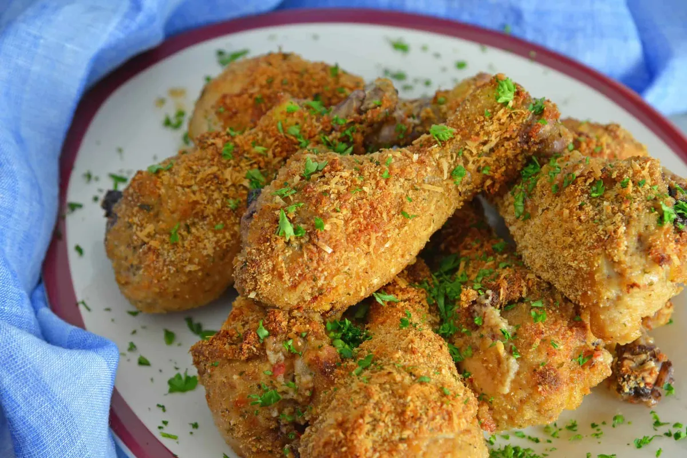

Oven Fried Chicken

Ingredients
- 1 - 2 cups Buttermilk
- 1/4 - 1/2 cup Frank's Buffalo Wing Sauce
- 8 Boneless and Skinless Chicken thighs
- 1 cup of flour
- 1 tsp garlic powder
- 1 tsp of onion powder
- 1 tsp smokey paprika
- 1/2 tsp cayenne
- 1 Tbl Baking Powder (not soda)
Directions
- Mix buttermilk and Franks in a bowl
- Marinate chicken thighs in buttermilk and Franks overnight
- Preheat oven to 375o F
- Mix the dry ingredients together in a bowl
- Prepare baking sheet with cookie cooling rack with a baking sheet underneath
- Coat the cookie rack with non-stick spray
- Take a piece of chicken out of the marinate and allow the excess marinate to drain off
- Dredge chicken in breading mixture then set the chicken on the baking sheet
- Repeat steps 7 and 8 for the remaining pieces of chicken
- Bake for 15 minutes - The chicken is done when it reaches 165 o F in the thickest part of the chicken